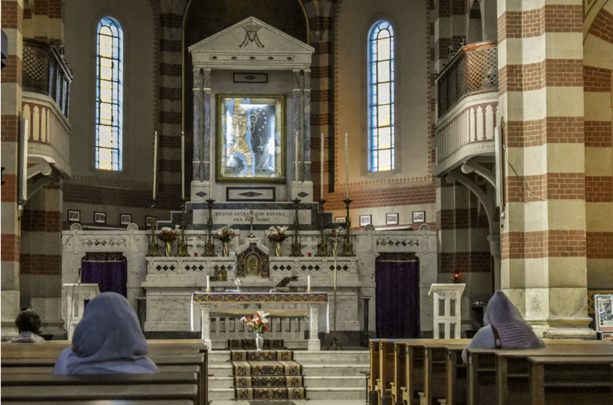
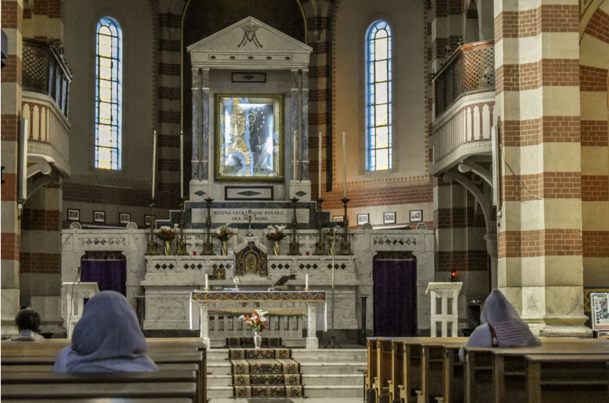
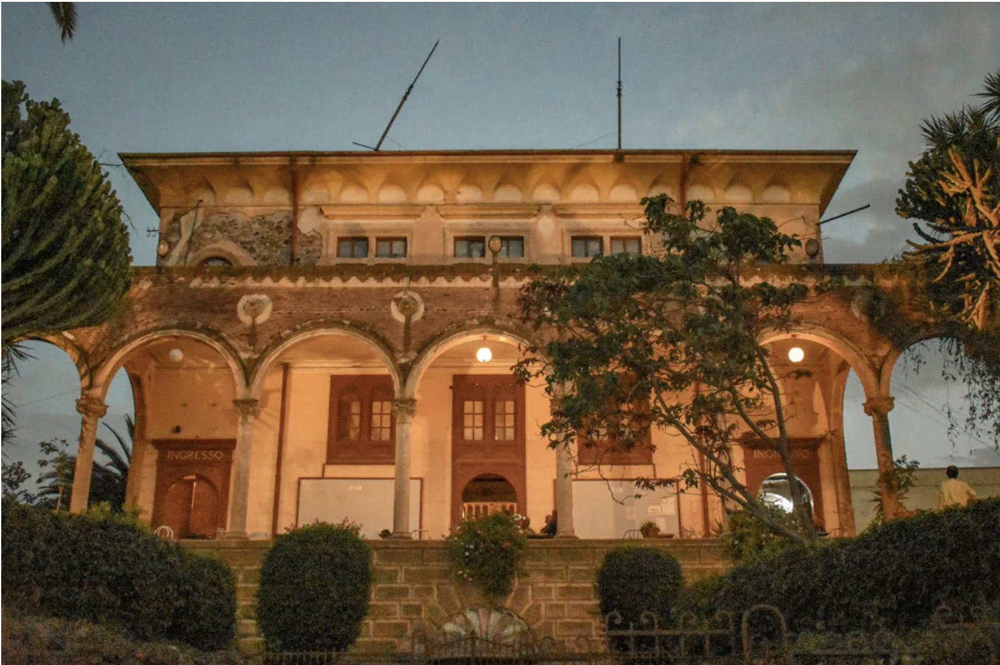
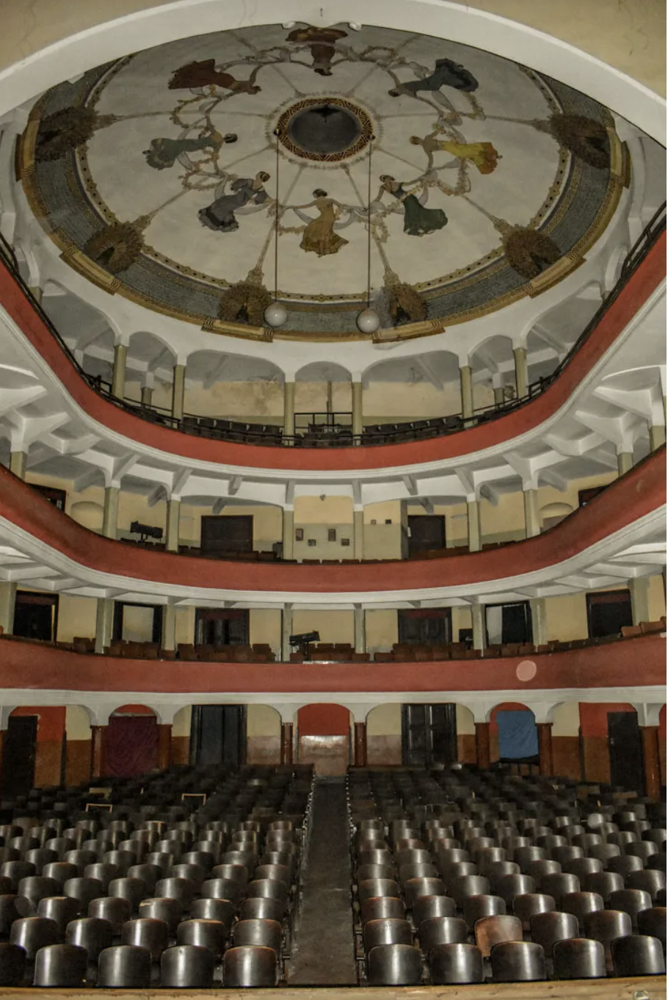

The Fiat Tagliero Building in Asmara, capital city of Eritrea, is a Futurist-style service station completed in 1938 and designed by the Italian architect Giuseppe Pettazzi. The building resembles to an aeroplane, consisting of the central tower which supports a pair of 15m wings build in reinforced concrete. The tower itself incorporates the office space, chasier desk and a shop. Fiat Tagliero was built on a major intersection where any of Asmara’s 50,000 cars could stock up on petrol and supplies before departing the metropolis for the airport or Eritrea’s southern towns and Ethiopia beyond.
Source Architectuul
 

The Cathedral was constructed from 1921 to September 1923 and was inaugurated in 1923, and is thought to be one of the finest Lombard – Romanesque –style churches outside Italy. Mario used a “Gothi Romano” style to build the catholic cathedral. The imposing church is around 2500m long and 2000m wide. Around 52m high, the tower of the bell is made of visible face bricks. Generally, there are eight bells in the tower. In addition to this, this amazing Cathedral has four clocks, which were built in 1924.These four clocks were mechanically timed to sound alarms every 15 minutes. They were electrically upgraded in 1992. What makes this electrical clock amazing and interesting is that, it doesn’t go retroactive, and just begins at the current time automatically.
Source Madote
 Opera House This building is over 100 years old. Yep. It was built in 1918. This was my personal favorite building in the city. It features two beautiful curved staircases leading up to the cafe inside, which look even more lovely when lit up at night. You can ask for a tour to see the inside during the day, which has a nice painted ceiling.
Source THAT TRAVELISTA